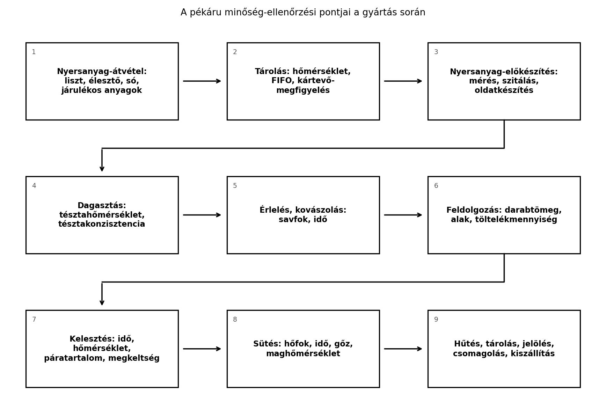

Egy hajnali műszakban a pék leveszi a kemencéből a vizes zsemle első tálcáját. A termék szép piros, de amikor leméri, több darab a megengedettnél könnyebb. A dagasztási napló szerint a vízmennyiség és a dagasztási idő rendben volt, a kelesztőkamra hőmérséklete viszont csak utólag derült ki, hogy fél órán át túl magas volt. A túlkelt tésztából kisebb, szárazabb belű termék lett. A pék nem „csak megsütött”, hanem mérni, összehasonlítani, dönteni kell: a tétel értékesíthető-e, és mit kell javítani, hogy a következő tálca megfelelő legyen.
Ez a helyzet mutatja meg, miért nem elég egyszerűen ránézni a termékre. A minőséget tervezni, mérni, irányítani és dokumentálni kell. Ebben az alfejezetben először a fogalmakat rendezzük, majd megmutatjuk, hogyan oszlik meg a pékségi minőségmunka az ellenőrzés, a biztosítás és a szabályozás között.
Az alábbi folyamatábra azt mutatja, hogy a minőség-ellenőrzés nem egyetlen művelet a gyártás végén, hanem a teljes gyártási láncot végigkíséri.

A balról jobbra haladó nyilak a gyártási folyamatot mutatják. Minden lépésnél kell legalább egy ellenőrzési pont: a nyersanyag-átvételnél például megvizsgáljuk a liszt érzékszervi és dokumentációs adatait, a dagasztásnál a tésztahőmérsékletet és a tészta állapotát, a sütésnél pedig a bél hőmérsékletét és a felület színét. Ha bármelyik ponton eltérést látunk, nem várhatjuk meg a teljes tétel elkészültét.
Definíció. A sütőipari termék minősége a termék olyan tulajdonságainak összessége, amelyek képessé teszik arra, hogy megfeleljen a vevői elvárásoknak és a jogszabályi, élelmiszerkönyvi követelményeknek. Sütőipari minőségi tulajdonság tehát nemcsak az élvezeti érték, hanem az élelmiszer-biztonsági megfelelőség, az összetétel, a tömeg, a jelölés és a csomagolás állapota is.
Szabály. A pékáru minősége csak akkor értelmezhető, ha megmondjuk, melyik vevői vagy hatósági követelménynek kell megfelelnie, és melyik mérhető tulajdonságra vonatkozik. Például egy búzakenyérnél vizsgálhatjuk a tömeget, a fajlagos térfogatot, a bél rugalmasságát, a héj vastagságát, a sótartalmat, a nedvességtartalmat, az allergénjelölést és a mikrobiológiai biztonságot. A „jó minőség” tehát nem hangulat, hanem követelményekhez kötött döntés.
A minőségre ható tényezők. Egy pékáru minőségét a teljes élelmiszerlánc befolyásolja. A legfontosabb tényezők:
| Tényezőcsoport | Példa a pékségben | Jellemző meghibásodás |
|---|---|---|
| Nyersanyag | liszt sikérereje, élesztő aktivitása, vízkeménység, tojás frissessége | a liszt rossz sütőipari értéke, csökkent térfogat |
| Technológia | dagasztási idő, tésztahőmérséklet, kelesztés, sütési paraméterek | alulkelt, túlsült, szakadt héj |
| Gépek, eszközök | dagasztógép fordulatszáma, kemence hőeloszlása, mérleg pontossága | egyenetlen tömeg, foltos sütés |
| Ember | betanítás, munkafegyelem, higiéniai tudatosság | hibás tömeg, nem megfelelő kézmosás |
| Környezet | kelesztőkamra páratartalma, hűtő hőmérséklete, por, keresztszennyeződés | nyálkás kenyérhéj, penész, allergénnyomok |
| Mérés, dokumentáció | mérőeszköz kalibráltsága, napló vezetése | hibás receptúra, visszakövethetetlen tétel |
A „nyersanyagtól a tárolásig” tehát minden lépésnél tudnunk kell, mit kell ellenőrizni, ki felelős érte, és mi a teendő, ha a mért érték kilép az előírt tűrésből.
Definíció. A minőség-ellenőrzés a termék vagy a gyártási folyamat valamely jellemzőjének vizsgálata, mérése, az eredmény összehasonlítása az előírt követelménnyel, majd döntés a megfelelőségről. Lényege a megfigyelés, a mérés és az összehasonlítás.
A minőség-ellenőrzés nem azonos a HACCP-vel. A HACCP kifejezetten az élelmiszer-biztonsági veszélyek megelőzésére, megszüntetésére vagy elfogadható szintre csökkentésére épül, például arra, hogy a kenyér bélhőmérséklete elérje a kívánt értéket, vagy a hűtött töltelék ne töltsön hosszú ideig melegben. A minőség-ellenőrzés ezen túl a vevői minőségi jellemzőket is vizsgálja: például a kalács fonat szabályosságát, a zsemle héjának színét, a kifli felületének ropogósságát.
A minőség-ellenőrzés feladata. A pékségben a minőség-ellenőrzésnek három fő helye van:
A végtermék bírálatához közös nevezéktan kell: ugyanazt a részt mindenki ugyanúgy nevezze. Az alábbi ábrán a kenyér külső nézetén a felső héj (1), a bevágás (2), a bevágás menti kitörés (3), az oldalhéj (4) és az alsó héj (5), a középen vágott metszeten a héj (6), a héj alatti réteg (7), a bélzet (8), a lyukazat (9) és az alakarány, vagyis a magasság és a szélesség aránya (10) látható.
A bírálatnál a metszetet mindig középen, kihűlt terméken, éles késsel készítsd, mert a meleg bélzet összenyomódik, és hamis képet ad. A kis hibás metszeten látható tömör alsó sáv és a héj alatti üreg már kiadást akadályozó hiba lehet; a kenyérhibák okait külön alfejezet tárgyalja. A HTML-kiadásban a részekre mutatva a minőségi elvárás is megjelenik (például „egyenletesen barna héj”, „rugalmasan visszatérő bélzet”).
A minőség-ellenőrzés módszerei. A pék leggyakrabban a következő módszereket alkalmazza:
A minőség-ellenőrzés szervei. A pékségben a minőség-ellenőrzés nemcsak a laboráns feladata. Minden dolgozó részt vesz benne a saját munkaterületén.
Példa. Egy kenyérgyártó üzemben a pék a vizes tésztából készült zsemle gyártása közben minden 10. darabot lemér. Ha a feladási tömeg előírása 70 g, és a mért értékek 68, 71, 70, 69, 72 g, akkor az átlag közelíti a 70 g-ot, de a szórás azt jelzi, hogy az osztógép vagy a kézi osztás pontosságát javítani kell. A mért adatokat a gyártási naplóban rögzíti, és eltérés esetén értesíti a műszakvezetőt.
Definíció. A minőségbiztosítás a tervezett és rendszeres tevékenységek összessége, amelyek biztosítják, hogy a termék a követelményeket megbízhatóan teljesítse. Míg a minőség-ellenőrzés a kész állapotot vizsgálja, a minőségbiztosítás a hibák megelőzésére és a folyamatok állandó szabályozottságára épül.
Definíció. A minőségszabályozás a gyártási folyamat folyamatos figyelése és visszacsatolásos szabályozása. Például ha a dagasztás utáni tésztahőmérséklet a nyáron túl magas, akkor a dagasztóvizet hidegebbre állítjuk; ha a kelesztőkamra páratartalma alacsony, párásítunk. A szabályozás tehát nem várja meg a hibás készterméket, hanem a mért eltérést azonnal visszavezeti a folyamatba.
A minőségbiztosítás magában foglalja a minőség-ellenőrzést, de annál több: az előírásokat, a betanítást, a folyamatszabályozást, a higiéniai gyakorlatot, a HACCP-t, a nyomonkövethetőséget és a dokumentációt is.
A minőségbiztosítási rendszerek típusai. A sütőiparban a vállalkozások különböző irányítási kereteket alkalmazhatnak. Fontos megkülönböztetni, hogy ezek a rendszerek nem törvényben előírt, kötelező tanúsítványok, hanem önkéntes irányítási eszközök; alkalmazásukat gyakran a nagy vevői láncok szerződésben írják elő.
A fenti rendszerek pontos követelményeit, a szabványszámokat és a hatályos változatokat kiadás előtt ellenőrizni kell (ellenőrizendő: az MSZ EN ISO 9001 és MSZ EN ISO 22000 hatályos magyar nyelvű kiadása, az IFS és BRC aktuális verziója).
A minőségbiztosítással kapcsolatos dolgozói feladatok. A dolgozó akkor is részese a minőségbiztosítási rendszernek, ha a tanúsítási dokumentumot soha nem olvasta. Az ő feladata a napi gyakorlatban a következő:
Előírás. Az élelmiszer-vállalkozónak az általa előállított termékre vonatkozó élelmiszerjogi követelményeket teljesítenie kell; a minőségügyi dokumentáció és a felelősségek meghatározása az élelmiszer-higiéniai követelmények és a vállalkozás által vállalt saját előírások szerint szükséges. Az élelmiszer-biztonsági feladatok a 178/2002/EK rendelet és a 852/2004/EK rendelet hatálya alá tartoznak, a sütőipari termékekre a Magyar Élelmiszerkönyv további követelményeket adhat (ellenőrizendő: a hatályos magyar élelmiszerkönyvi előírások és a termékcsoport-specifikus követelmények).
Egy pékségben a vevőktől egy hét alatt több panasz érkezett: a szeletelt kenyér bele néhol ragacsos, nyúlós, a zsemle héja foltos. A pék a kemence hőmérsékletét és a kelesztési időt ellenőrizte, de minden érték a technológiai lapnak megfelelőnek tűnt.
A minőségügyi vezető ezután nemcsak a végterméket, hanem a bemenő nyersanyagot is vizsgálni kezdte. Kiderült, hogy egy új beszállítótól érkezett, a specifikációnál alacsonyabb esésszámú (magasabb amilázaktivitású, például csírázott szemből őrölt) liszttétel került a gyártásba: a bél ragacsosabb lett, a héj sötétebben, foltosan színeződött. A hibakeresésnél először ki kellett zárni a nyúlósodást (rope, Bacillus-fertőzés: jellegzetes gyümölcsös, édeskés szag, fonalasan húzódó bél), mert az élelmiszer-biztonsági hiba, nem enzimhiba (lásd a liszthibák alfejezetét). A tészta kelése a gyártási napló szerint „időre” megfelelő volt. A hibát nem a kemence, hanem a nyersanyag okozta, amit a liszt esésszámának mérése igazolt (ellenőrizendő: a liszt specifikációja). A tanulság: a minőség vizsgálata nem állhat meg a sütési hőfoknál; ha a hibakeresés a lánc valamely pontját kihagyja, a valódi ok rejtve marad.
A minőség-ellenőrzést magát is minőség-ellenőrzés alá kell vonnunk, azaz meg kell határozni, hogy mit, milyen módszerrel, milyen gyakorisággal, ki és milyen kritériumok alapján minősít.
A leggyakrabban ellenőrzött pékáru-jellemzők:
| Vizsgált jellemző | Módszer | Jó, ha | Gyakori eltérés |
|---|---|---|---|
| Darabtömeg | mérleg | a megadott tűrésen belül van | alul- vagy túltöltés |
| Térfogat, fajlagos térfogat | mérés, számítás | a gyártmánylap szerinti | lapos, tömör termék |
| Küllem, héj színe, formája | érzékszervi | egyenletes, termékre jellemző | sápadt, égett, repedt |
| Bélzet (lyukasság, rugalmasság) | érzékszervi | rugalmas, egyenletes lyukazat | morzsalékos, nyúlósodott |
| Íz, szag | érzékszervi | tiszta, idegen íztől mentes | savanyú, dohos, vegyszeres |
| Nedvesség, savfok, sótartalom | üzemi gyorsmérés vagy labor | a termékre előírt tartományban | eltérés a normától |
| Élelmiszer-biztonsági paraméter | HACCP-ellenőrzés, labor | a határérték alatt | patogén jelenlét emelkedett szintje |
| Jelölés, allergén- és fogyasztói tájékoztatás | címke ellenőrzése | az 1169/2011/EU szerint pontos | hiányzó allergén, rossz minőségmegőrzési vagy fogyaszthatósági idő |
A tömegellenőrzésnél a mérési sorozat átlagának a megadott érték közelében kell lennie, és az egyes daraboknak a tűrésmezőn belül. A gyártási naplóban nem elég annyit írni, hogy „megfelelő”; a mért számot kell rögzíteni. Ezt a követelményt később a Tömegellenőrzés és töltelékhányad alfejezetben részletesen gyakoroljuk.
1. Igaz vagy hamis? A minőség-ellenőrzés azonos a HACCP-vel.
2. Igaz vagy hamis? A minőségbiztosítás a hibák megelőzésére épül, a minőség-ellenőrzés pedig a termék vagy folyamat jellemzőinek vizsgálatára és a követelményekkel való összehasonlítására.
3. Melyik módszerrel ellenőrzi a pék leggyorsabban a frissen sült kenyér bélzetének rugalmasságát?
4. Soroljon fel három bemenő ellenőrzési vizsgálatot egy pékség lisztátvételekor!
5. Mi a minőségszabályozás lényege a kelesztőkamra hőmérsékletének példáján?
6. A gyártási naplóban „70 g” a feladási tömeg, de a pék csak annyit ír be: „jó”. Mi ezzel a hiba?
1. feladat (A) Határozza meg a minőség-ellenőrzés, a minőségbiztosítás és a minőségszabályozás közötti különbséget egy-egy példamondattal, a vizes zsemle gyártása példáján.
2. feladat (A) Sorolja fel a pékáru minőségét befolyásoló tényezőcsoportokat, és mindegyikhez írjon egy-egy konkrét példát a tanult felsorolásból.
3. feladat (B) Egy sütőipari üzemben a kenyérdarabok tömegét ellenőrzik. A cél 1000 g. A mérési sorozat: 995 g, 1002 g, 998 g, 1005 g, 997 g. Számítsa ki az átlagot! (A tűrés tanulási példa: ±3%. Ellenőrizze, hogy az átlag és az egyes darabok a tűrésen belül vannak-e!) Fogalmazza meg, milyen döntést hozna a tételről.
4. feladat (B) Tervezzen bemenő, gyártásközi és végtermék-ellenőrzési pontot a briós gyártásához! Mindhárom ponthoz adja meg a vizsgált jellemzőt, a módszert és az elvárt értéket (tanulási példaként).
5. feladat (C) Egy pékségben a kenyér héja időnként túl sápadt, a bélzet enyhén tömör. A kemence hőmérséklete a gyártmánylap szerint 230 °C, a sütési idő 35 perc. A pék azt mondja, a kemence jó, mert a mérőóra szerint 230 °C-ot mutat. Milyen hibalehetőségeket kell megvizsgálni? Tegyen javaslatot a módszeres hibakeresésre, figyelembe véve a nyersanyag, a folyamat és a mérési oldalt.
6. feladat (D) Az alábbi gyártási naplóbejegyzést vizsgálja: „07:10 dagasztás: kész, 07:40 osztás: 100 db, 08:10 kelesztés: jó, 08:30 sütés: jó.” Milyen minőségbiztosítási hiányosságokat talál? Javítsa a bejegyzést úgy, hogy a jellemzőket mérhetően rögzítse.
1. feladat (A) - Minőség-ellenőrzés: a vizes zsemle tömegét megmérjük, összehasonlítjuk a gyártmánylapi 70 g ±3 g tűréssel, és döntünk. - Minőségbiztosítás: a gyártmánylap, az osztógép napi ellenőrzése, a dolgozók betanítása, a mérőeszköz kalibráltatása mind azt szolgálja, hogy a zsemle tömege rendszeresen a tűrésen belül legyen. - Minőségszabályozás: az osztás közben mért átlag alapján, ha a darabtömeg folyamatosan csökken, azonnal utánállítjuk az osztógépet, nem várjuk meg a hibás tételt.
2. feladat (A) Például: nyersanyag (liszt sikérereje), technológia (dagasztási idő), gépek (a mérleg pontatlansága), ember (a dolgozó nem ellenőrzi a darabtömeget), környezet (magas páratartalom a kelesztőben), mérés és dokumentáció (a CCP-lap hiánya).
3. feladat (B) A mért tömegértékek: 995, 1002, 998, 1005, 997 g. Az átlag: 995 + 1002 + 998 + 1005 + 997 = 4997 g; 4997 / 5 = 999,4 g. A tűrés ±3%: 1000 g ±30 g, azaz 970–1030 g. Minden darab 995–1005 g közé esik, tehát a tűrésen belül van; az átlag 999,4 g, ami gyakorlatilag eléri az 1000 g-ot. Döntés: a tétel tömeg szempontjából megfelelő; továbbá a mérési sorozatot a gyártási naplóban rögzíteni kell.
4. feladat (B) - Bemenő: liszt sikértartalmának és érzékszervi állapotának ellenőrzése (átvételi bizonylat, szaglás, próbasütés esetenként). Elvárt: BL 55 liszt esetén a gyártmánylapban megadott sütőipari viselkedés (ellenőrizendő: üzemi specifikáció). - Gyártásközi: tésztahőmérséklet mérése a dagasztás után. Elvárt: például 26 °C ±2 °C (tanulási példa). - Végtermék: a briós darabtömege, térfogata, bélzete és héj színe. Elvárt: a gyártmánylap szerinti 50 g ±2 g tömeg, egyenletes aranysárga héj, laza bélzet.
5. feladat (C) A sápadt héj és tömör bél okai lehetnek: - Nyersanyag: gyenge sikérű liszt, alacsony enzimaktivitás, túl alacsony cukor vagy zsír a receptúrában. - Folyamat: a dagasztás nem fejlődött ki a hártyáig, a kelesztés túl rövid vagy túl hosszú, a sütési hőmérséklet a mérőóra szerint jó, de a kemence hőeloszlása egyenetlen. - Mérés: a kemence hőmérője nem hiteles, a mérőórát kalibrálni kell, vagy a tálcák túl közel vannak egymáshoz.
Módszeres hibakeresés: először a kemence hőmérsékletét független hőmérővel is mérje meg, végezzen próbasütést kisebb tétellel, és nézze meg a tészta állapotát a dagasztás és kelesztés végén. Ha a próbasütés más liszttel jó eredményt ad, a liszt a hibaforrás; ha ugyanazzal a liszttel másik kemence jól süt, a kemencét kell vizsgálni.
6. feladat (D) Hiányosságok: nincs mért tésztahőmérséklet, nincs darabtömeg-ellenőrzés, nincs kelesztési hőmérséklet és páratartalom, nincs maghőmérséklet vagy sütési hőmérséklet pontos értéke; a „jó” nem mérhető. Javított bejegyzés (tanulási példa): 07:10 dagasztás kész, tésztahőmérséklet 26 °C; 07:40 osztás 100 db, első 5 db tömege 70,1; 69,8; 70,3; 70,0; 69,9 g; 08:10 kelesztés indul, kamra 32 °C, 75% relatív páratartalom; 08:30 sütés 220 °C, gőz 5 s, maghőmérséklet 97 °C, sütési idő 18 perc.
A minőség a termék tulajdonságainak összessége, amely a vevői és jogszabályi követelményeknek való megfelelést jelenti. A pékáru minőségét a nyersanyag, a technológia, a gépek, az ember, a környezet és a mérés-dokumentáció együttesen határozza meg.
A minőség-ellenőrzés a termék vagy folyamat jellemzőinek vizsgálata, mérése, és az előírással való összehasonlítása. Formái: bemenő, gyártásközi és végtermék-ellenőrzés. Módszerei: érzékszervi, fizikai, kémiai, technológiai és mikrobiológiai vizsgálat. A minőségbiztosítás a hibák megelőzésére épülő, tervezett tevékenységek összessége; a minőségszabályozás a folyamat folyamatos figyelése és visszacsatolása. A gyakorlatban ezek együtt értendők: a dolgozó a saját műveletét méri, a gyártmánylap szerint dönt, az eltérést jelzi, a mérési eredményeket pedig valós időben rögzíti.
Ezek a fogalmak és módszerek közvetlenül előkészítik a Magyar Élelmiszerkönyv, szabványok és a gyártmánylap alfejezetet, mert ott azt tanuljuk meg, milyen előírásokhoz hasonlítunk. A mért és érzékszervi jellemzőket később az Érzékszervi vizsgálat és pontozásos minősítés alfejezetben alkalmazzuk a pékáru pontozásos minősítésére.